Here's my collection of von Schemm. It's what I found. There are probably more. I yet have to discover the book it was taken from. It may interlink with that collection of deaf signs (here)
I just placed these pictures here, mostly because here are so many of them, and also because I didn't figure them out yet. I only sorted them out a little by placing similar gestures next to each other.
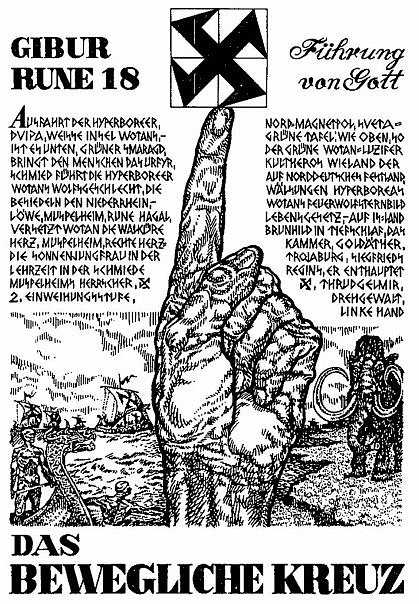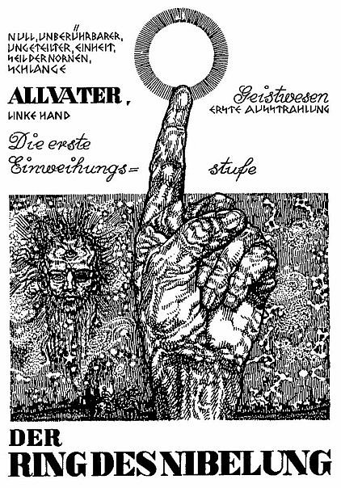
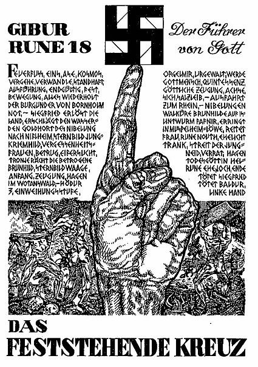 These Fuhrer von Gott thing could be an indicator that it's some nazi propaganda or that Hitler used the same concept when he came to power. But because the author is born in 1920, he definitely concptualized it after Adolf. Either way, it's some interesting graphics with some definite relation to the previous knowledge about it: he gave so much effort into the drawings, he probably gave the same zeal into the research. He also keeps on circling round those gestures, I probably should sort out what is valid and what's not. Either way, this freaky part is in here, separated, quarantened, to be researched ad commented upon. Enjoy.
And because both such swastikas are shown on the left hand, that socialism is the left hand path, as they say about christianity too, btw, and these kreuzes, they're crazes probably.
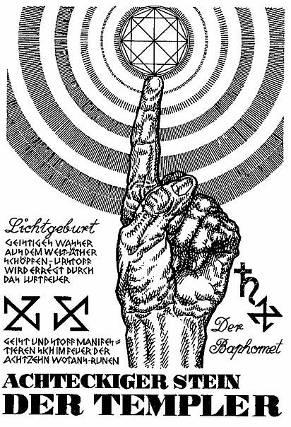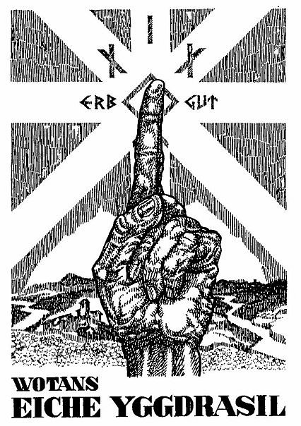
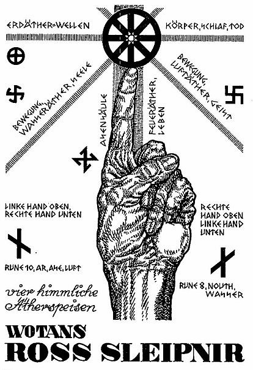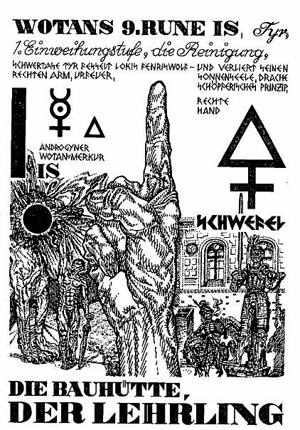
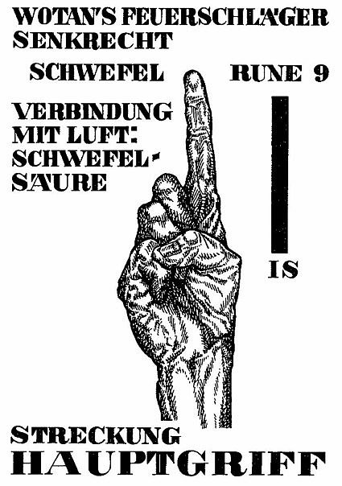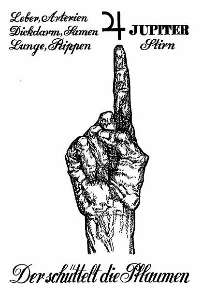
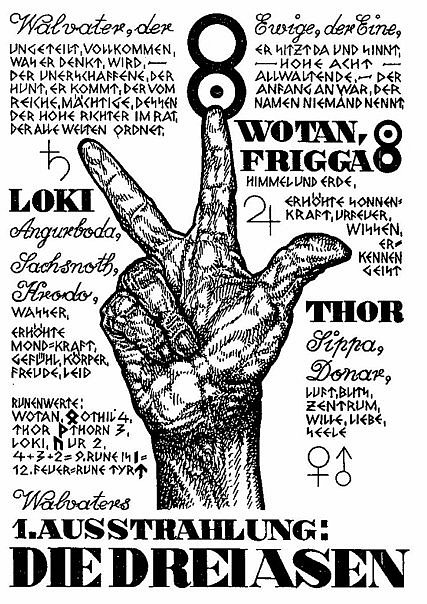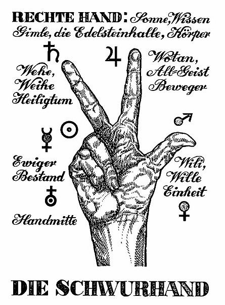
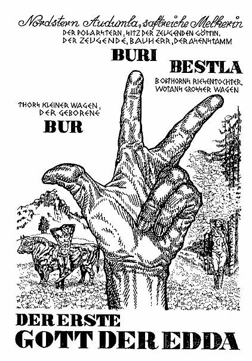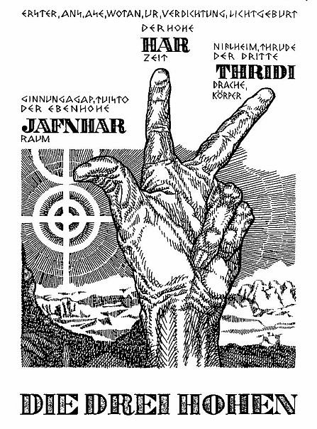
 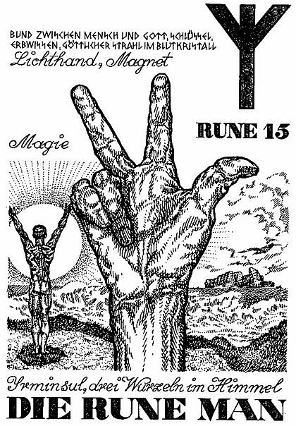
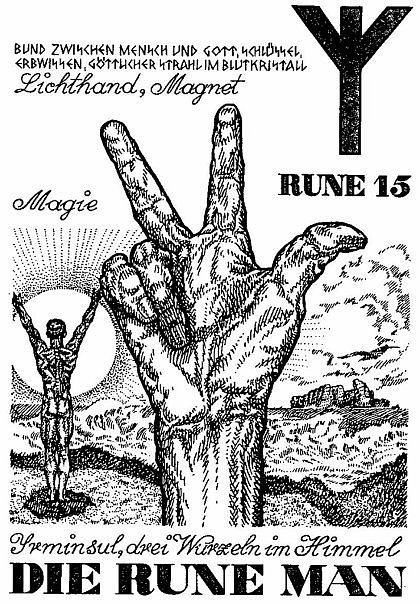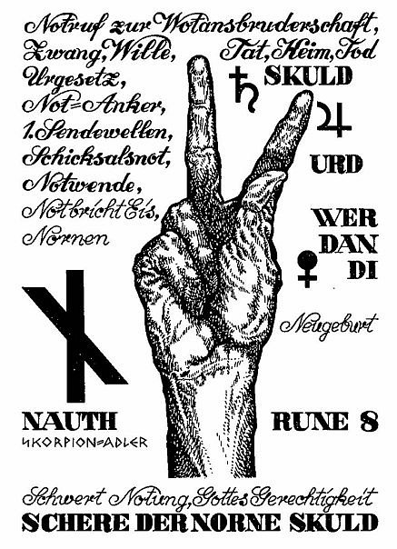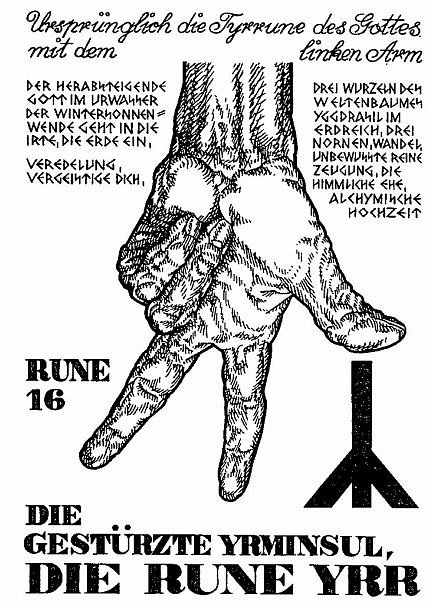
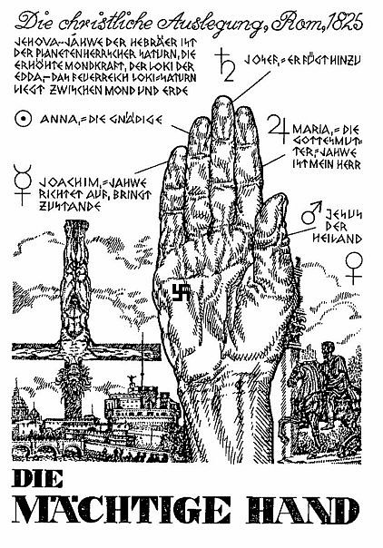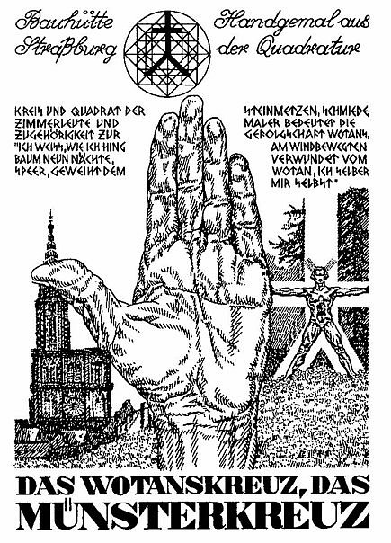
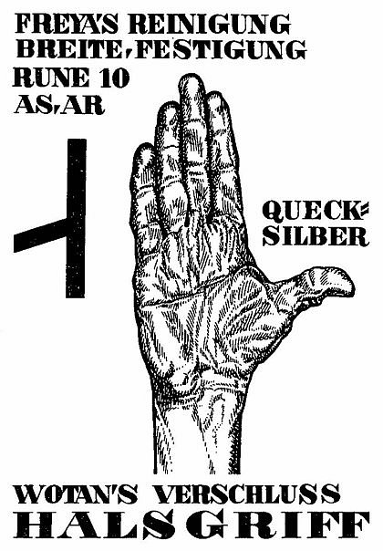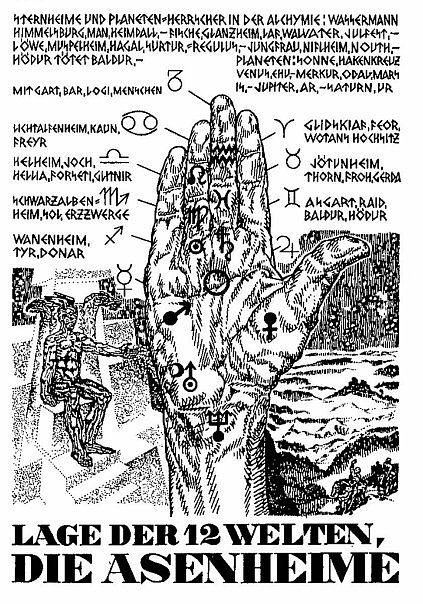
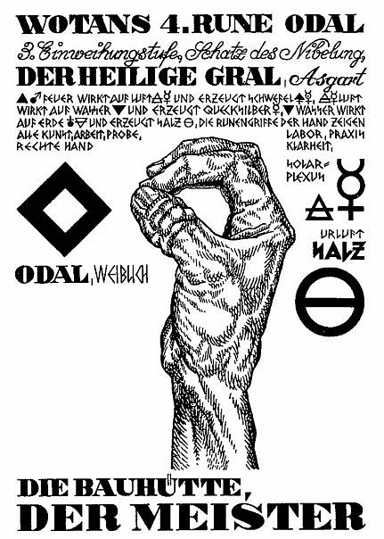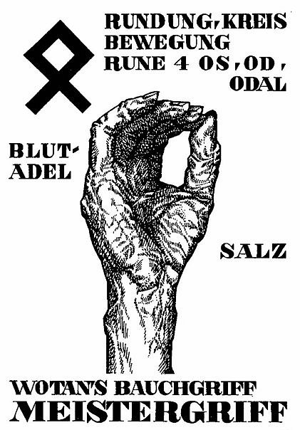
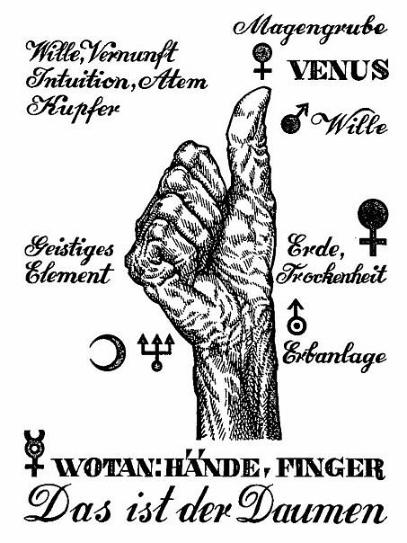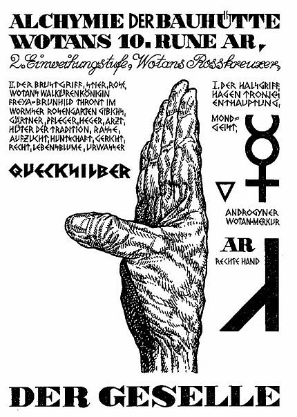
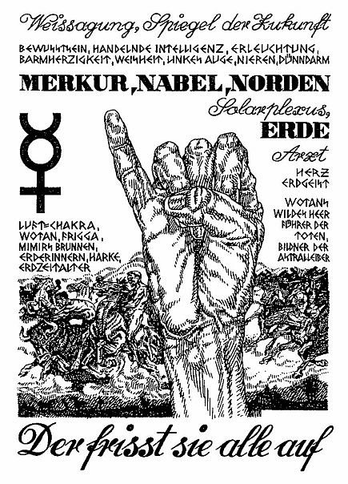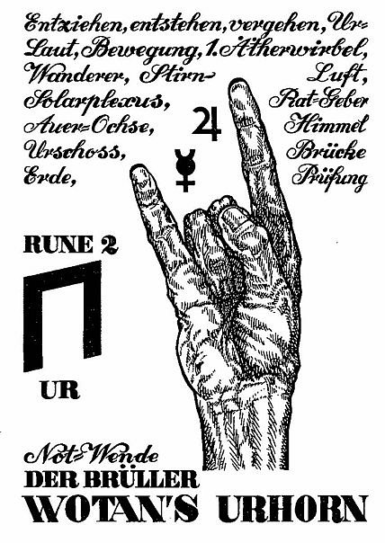
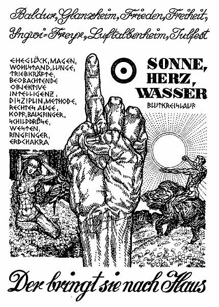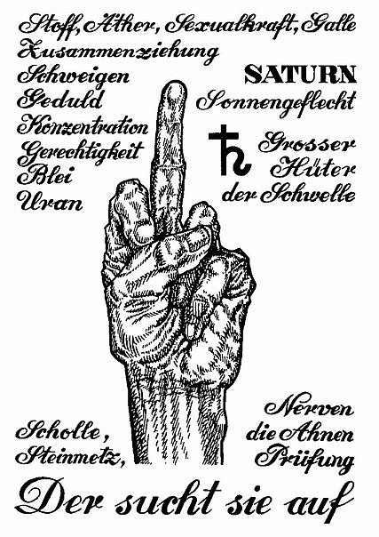
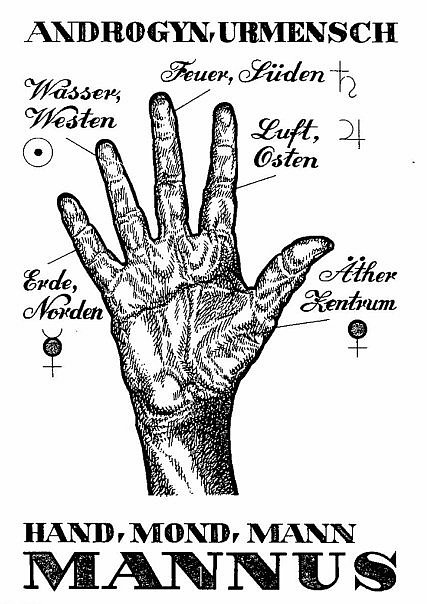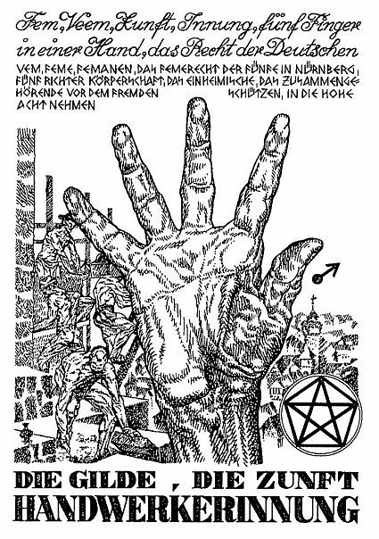
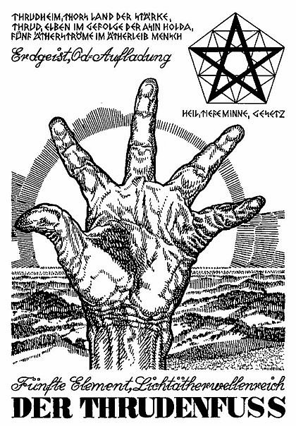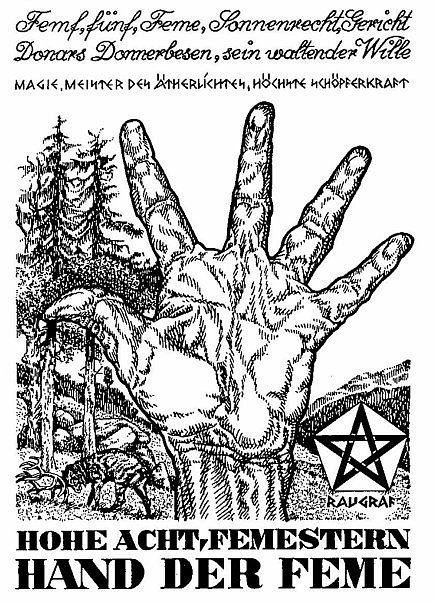
Here's some other school of these gestures, probably the same tradition really:
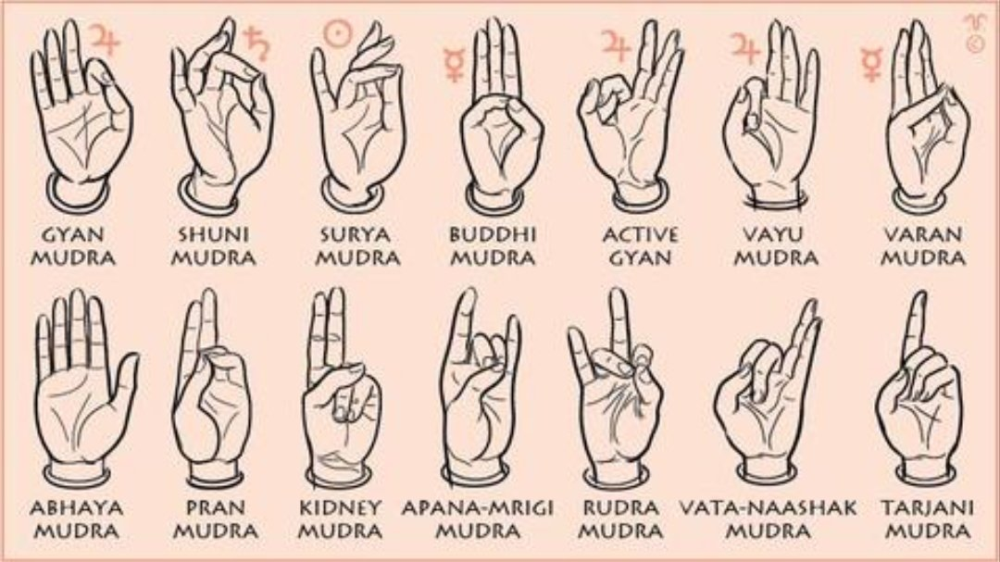

and under the same word, mudra, from which russian mudry (wise) probably comes, I found this:
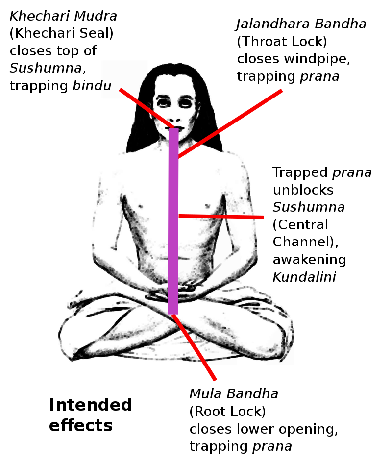